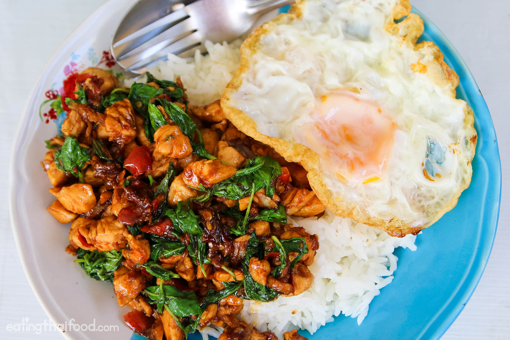

Thai Basil Chicken

Description
Thai Basil is a beloved street food favorite, and in this recipe you'll learn to cook this delicious meal yourself!
Ingredients
- 1 egg
- 1 chicken breast
- 5 cloves of garlic
- 4 - 10 thai chilies - This will depend on spice level preference.
- 2 - 3 tablespoons of oil for frying
- 1 teaspoon of oyster sauce
- 1/2 teaspoon light soy sauce
- 1 splash of dark sweet soy sauce
- 1/2 teaspoon sugar
- 1 handful of Thai holy basil leaves (use thai basil if you can't find it!)
Steps
- Heat two tablespoons of oil in pan. Once the oil is hot, add in the egg. Cook the egg how you like it! Once cooked, remove from pan and set aside.
- Cut chicken in half horizontally. Cut each strip into thin slices. Set chicken aside.
- Peel the garlic. Mince garlic and thai chilies and set aside.
- Heat one tablespoon of oil in pan and add minced chilies and garlic. Stir until fragrant but not burnt!
- Add chicken to pan and cook about halfway. Once slightly cooked, add oyster sauce, light soy sauce, dark soy sauce, and sugar.
- Once chicken is cooked, add in the Thai holy basil. Only cook this for a few seconds and then remove from the heat.